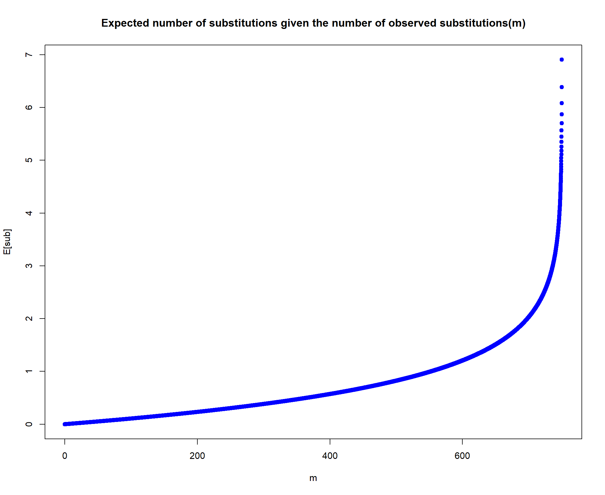

Last updated: 2022-04-05
Checks: 7 0
Knit directory: QME/
This reproducible R Markdown analysis was created with workflowr (version 1.6.2). The Checks tab describes the reproducibility checks that were applied when the results were created. The Past versions tab lists the development history.
Great! Since the R Markdown file has been committed to the Git repository, you know the exact version of the code that produced these results.
Great job! The global environment was empty. Objects defined in the global environment can affect the analysis in your R Markdown file in unknown ways. For reproduciblity it’s best to always run the code in an empty environment.
The command set.seed(20220403) was run prior to running the code in the R Markdown file. Setting a seed ensures that any results that rely on randomness, e.g. subsampling or permutations, are reproducible.
Great job! Recording the operating system, R version, and package versions is critical for reproducibility.
Nice! There were no cached chunks for this analysis, so you can be confident that you successfully produced the results during this run.
Great job! Using relative paths to the files within your workflowr project makes it easier to run your code on other machines.
Great! You are using Git for version control. Tracking code development and connecting the code version to the results is critical for reproducibility.
The results in this page were generated with repository version a236075. See the Past versions tab to see a history of the changes made to the R Markdown and HTML files.
Note that you need to be careful to ensure that all relevant files for the analysis have been committed to Git prior to generating the results (you can use wflow_publish or wflow_git_commit). workflowr only checks the R Markdown file, but you know if there are other scripts or data files that it depends on. Below is the status of the Git repository when the results were generated:
Ignored files:
Ignored: .Rproj.user/
Untracked files:
Untracked: Sample.label_metadata.xlsx
Untracked: data/OM.CompanionTables.xlsx
Untracked: data/Sample.label_metadata.xlsx
Untracked: data/miTAG.taxonomic.profiles.release.tsv
Note that any generated files, e.g. HTML, png, CSS, etc., are not included in this status report because it is ok for generated content to have uncommitted changes.
These are the previous versions of the repository in which changes were made to the R Markdown (analysis/HW2_visualization.Rmd) and HTML (docs/HW2_visualization.html) files. If you’ve configured a remote Git repository (see ?wflow_git_remote), click on the hyperlinks in the table below to view the files as they were in that past version.
| File | Version | Author | Date | Message |
|---|---|---|---|---|
| Rmd | a236075 | KiseokLee | 2022-04-05 | wflow_publish("analysis/*.Rmd") |
Researcher: Kiseok Lee
Date: 4/3/22
Lab: Seppe Kuehn
# libraries
library(dplyr)
library(ggplot2)
library(RColorBrewer)
library(vegan)
library(tidyverse)
library(magrittr)
library(readxl)
library(reshape2)
library(gtools)
library(devtools)
library(openxlsx)
library(ape)
library(stringr)
library(tidyr)
## theme for ggplot
mytheme <- theme_bw() +
theme(plot.title = element_text(size = 19,hjust = 0.5, family="serif")) +
theme(axis.title.x = element_text(size = 17,hjust = 0.5, family="serif")) +
theme(axis.title.y = element_text(size = 17,hjust = 0.5, family="serif")) +
theme(axis.text.x = element_text(hjust = 0.5, vjust=0.3,size=13, family="serif"))+
theme(axis.text.y = element_text(size=10, family="serif"))+
theme(panel.grid.major = element_blank()) +
theme(panel.grid.minor = element_blank(),panel.background=element_blank(),panel.border=element_blank(),plot.background=element_blank()) +
theme(axis.ticks = element_line(size = 1.1))
mytheme_2d <- theme_bw() +
theme(plot.title = element_text(size = 19,hjust = 0.5, family="serif")) +
theme(axis.title.x = element_text(size = 17,hjust = 0.5, family="serif")) +
theme(axis.title.y = element_text(size = 17,hjust = 0.5, family="serif")) +
theme(axis.text.x = element_text(hjust = 0.5, vjust=0.3,size=13, family="serif"))+
theme(axis.text.y = element_text(size=13, family="serif"))+
# theme(panel.grid.major = element_blank()) +
# theme(panel.grid.minor = element_blank(),panel.background=element_blank(),plot.background=element_blank()) +
theme(axis.ticks = element_line(size = 1.1))
# color collection
my_color_collection <- c(
"#CBD588", "#5F7FC7", "orange", "#AD6F3B", "#673770",
"#D14285", "#652926", "#C84248", "#8569D5", "#5E738F",
"#D1A33D", "#8A7C64", "#599861","#616163", "#FFCDB2",
"#6D9F71", "#242F40",
"#CCA43B", "#F92A82", "#ED7B84", "#7EB77F",
"#DEC4A1", "#E5D1D0", '#0E8482', '#C9DAEA', '#337357',
'#95C623', '#E55812', '#04471C', '#F2D7EE', '#D3BCC0',
'#A5668B', '#69306D', '#0E103D', '#1A535C', '#4ECDC4',
'#F7FFF7', '#FF6B6B', '#FFE66D', '#6699CC', '#FFF275',
'#FF8C42', '#FF3C38', '#A23E48', '#000000', '#CF5C36',
'#EEE5E9', '#7C7C7C', '#EFC88B', '#2E5266', '#6E8898',
'#9FB1BC', '#D3D0CB', '#E2C044', '#5BC0EB', '#FDE74C',
'#9BC53D', '#E55934', '#FA7921', "#CD9BCD", "#508578", "#DA5724")
# for git push, use this instead of using wflow_git_push()
# git push -u origin master (in the Git app / in the working directory)Now make a plot of \(E[sub]\) as a function of \(m\) for \(n = 1000\). Here is the main point \[ E[sub] = 6\alpha \Delta t = \boxed{-\dfrac{3}{4}\log (1 - \dfrac{4}{3}\dfrac{m}{n})} \]
m <- seq(0, 3000/4, length.out = 10000)
E_sub <- -3/4 * log(1-( (4*m) / (3*1000) ))
plot(m, E_sub, col = "blue", lty = 1, pch = 19, lwd = 1,
ylab = "E[sub]", main = "Expected number of substitutions given the number of observed substitutions(m)")
t_w1 <- openxlsx::read.xlsx("data/OM.CompanionTables.xlsx", sheet = "Table W1")
dim(t_w1) # 245[1] 243 17head(t_w1) Sample.label.[TARA_station#_environmental-feature_size-fraction]
1 TARA_004_DCM_0.22-1.6
2 TARA_004_SRF_0.22-1.6
3 TARA_007_DCM_0.22-1.6
4 TARA_007_SRF_0.22-1.6
5 TARA_009_DCM_0.22-1.6
6 TARA_009_SRF_0.22-1.6
INSDC.sample.accession.number(s) INSDC.run.accession.number(s)
1 ERS487936 ERR598950|ERR599095
2 ERS487899 ERR598955|ERR599003
3 ERS477953 ERR315856
4 ERS477931 ERR315857
5 ERS488147 ERR594315|ERR594329
6 ERS488119 ERR594288|ERR594316|ERR594317
Corresponding.nucleotides.data.published.at.ENA
1 http://www.ebi.ac.uk/ena/data/view/ERR598950,ERR599095
2 http://www.ebi.ac.uk/ena/data/view/ERR598955,ERR599003
3 http://www.ebi.ac.uk/ena/data/view/ERR315856
4 http://www.ebi.ac.uk/ena/data/view/ERR315857
5 http://www.ebi.ac.uk/ena/data/view/ERR594315,ERR594329
6 http://www.ebi.ac.uk/ena/data/view/ERR594288,ERR594316,ERR594317
PANGAEA.sample.identifier Corresponding.contextual.data.published.at.PANGAEA
1 TARA_X000000368 http://www.pangaea.de/search?All&q=TARA_X000000368
2 TARA_Y200000002 http://www.pangaea.de/search?All&q=TARA_Y200000002
3 TARA_A200000159 http://www.pangaea.de/search?All&q=TARA_A200000159
4 TARA_A200000113 http://www.pangaea.de/search?All&q=TARA_A200000113
5 TARA_X000001036 http://www.pangaea.de/search?All&q=TARA_X000001036
6 TARA_X000000950 http://www.pangaea.de/search?All&q=TARA_X000000950
Station.identifier.[TARA_station#] Date/Time.[yyyy-mm-ddThh:mm]
1 TARA_004 2009-09-15T18:00
2 TARA_004 2009-09-15T11:30
3 TARA_007 2009-09-23T16:08
4 TARA_007 2009-09-23T12:50
5 TARA_009 2009-09-28T16:59
6 TARA_009 2009-09-28T12:18
Latitude.[degrees.North] Longitude.[degrees.East] Sampling.depth.[m]
1 36.5533 -6.5669 40
2 36.5533 -6.5669 5
3 37.0541 1.9478 42
4 37.0510 1.9378 5
5 39.0609 5.9422 55
6 39.1633 5.9160 5
Environmental.Feature
1 (DCM) deep chlorophyll maximum layer (ENVO:01000326)
2 (SRF) surface water layer (ENVO:00002042)
3 (DCM) deep chlorophyll maximum layer (ENVO:01000326)
4 (SRF) surface water layer (ENVO:00002042)
5 (DCM) deep chlorophyll maximum layer (ENVO:01000326)
6 (SRF) surface water layer (ENVO:00002042)
Size.fraction.lower.threshold.[micrometre]
1 0.22
2 0.22
3 0.22
4 0.22
5 0.22
6 0.22
Size.fraction.upper.threshold.[micrometre]
1 1.6
2 1.6
3 1.6
4 1.6
5 1.6
6 1.6
Marine.pelagic.biomes.(Longhurst.2007)
1 Westerlies Biome
2 Westerlies Biome
3 Westerlies Biome
4 Westerlies Biome
5 Westerlies Biome
6 Westerlies Biome
Ocean.and.sea.regions.(IHO.General.Sea.Areas.1953).[MRGID.registered.at.www.marineregions.com]
1 (NAO) North Atlantic Ocean [MRGID:1912]
2 (NAO) North Atlantic Ocean [MRGID:1912]
3 (MS) Mediterranean Sea [MRGID:1905]
4 (MS) Mediterranean Sea [MRGID:1905]
5 (MS) Mediterranean Sea [MRGID:1905]
6 (MS) Mediterranean Sea [MRGID:1905]
Marine.pelagic.biomes.(Longhurst.2007).[MRGID.registered.at.www.marineregions.com]
1 (NAST-E) North Atlantic Subtropical Gyral Province [MRGID:21467]
2 (NAST-E) North Atlantic Subtropical Gyral Province [MRGID:21467]
3 (MEDI) Mediterranean Sea, Black Sea Province [MRGID:21465]
4 (MEDI) Mediterranean Sea, Black Sea Province [MRGID:21465]
5 (MEDI) Mediterranean Sea, Black Sea Province [MRGID:21465]
6 (MEDI) Mediterranean Sea, Black Sea Province [MRGID:21465]tail(t_w1) Sample.label.[TARA_station#_environmental-feature_size-fraction]
238 TARA_150_SRF_0.22-3
239 TARA_151_DCM_0.22-3
240 TARA_151_SRF_0.22-3
241 TARA_152_MES_0.22-3
242 TARA_152_MIX_0.22-3
243 TARA_152_SRF_0.22-3
INSDC.sample.accession.number(s) INSDC.run.accession.number(s)
238 ERS494445 ERR599170
239 ERS494559 ERR598986
240 ERS494518 ERR598976
241 ERS494616 ERR598944
242 ERS494628 ERR599001
243 ERS494579 ERR599078
Corresponding.nucleotides.data.published.at.ENA PANGAEA.sample.identifier
238 http://www.ebi.ac.uk/ena/data/view/ERR599170 TARA_B100001769
239 http://www.ebi.ac.uk/ena/data/view/ERR598986 TARA_B100001559
240 http://www.ebi.ac.uk/ena/data/view/ERR598976 TARA_B100001564
241 http://www.ebi.ac.uk/ena/data/view/ERR598944 TARA_B100001179
242 http://www.ebi.ac.uk/ena/data/view/ERR599001 TARA_B100001175
243 http://www.ebi.ac.uk/ena/data/view/ERR599078 TARA_B100001173
Corresponding.contextual.data.published.at.PANGAEA
238 http://www.pangaea.de/search?All&q=TARA_B100001769
239 http://www.pangaea.de/search?All&q=TARA_B100001559
240 http://www.pangaea.de/search?All&q=TARA_B100001564
241 http://www.pangaea.de/search?All&q=TARA_B100001179
242 http://www.pangaea.de/search?All&q=TARA_B100001175
243 http://www.pangaea.de/search?All&q=TARA_B100001173
Station.identifier.[TARA_station#] Date/Time.[yyyy-mm-ddThh:mm]
238 TARA_150 2012-03-05T09:25
239 TARA_151 2012-03-09T17:42:29
240 TARA_151 2012-03-09T08:59
241 TARA_152 2012-03-19T14:59:48
242 TARA_152 2012-03-20T08:48:42
243 TARA_152 2012-03-19T08:18
Latitude.[degrees.North] Longitude.[degrees.East] Sampling.depth.[m]
238 35.9346 -37.3032 5
239 36.1811 -28.9373 80
240 36.1715 -29.0230 5
241 43.7182 -16.8714 800
242 43.7056 -16.8794 25
243 43.6792 -16.8344 5
Environmental.Feature
238 (SRF) surface water layer (ENVO:00002042)
239 (DCM) deep chlorophyll maximum layer (ENVO:01000326)
240 (SRF) surface water layer (ENVO:00002042)
241 (MES) mesopelagic zone (ENVO:00000213)
242 (MIX) marine epipelagic mixed layer (ENVO:01000061)
243 (SRF) surface water layer (ENVO:00002042)
Size.fraction.lower.threshold.[micrometre]
238 0.22
239 0.22
240 0.22
241 0.22
242 0.22
243 0.22
Size.fraction.upper.threshold.[micrometre]
238 3
239 3
240 3
241 3
242 3
243 3
Marine.pelagic.biomes.(Longhurst.2007)
238 Westerlies Biome
239 Westerlies Biome
240 Westerlies Biome
241 Westerlies Biome
242 Westerlies Biome
243 Westerlies Biome
Ocean.and.sea.regions.(IHO.General.Sea.Areas.1953).[MRGID.registered.at.www.marineregions.com]
238 (NAO) North Atlantic Ocean [MRGID:1912]
239 (NAO) North Atlantic Ocean [MRGID:1912]
240 (NAO) North Atlantic Ocean [MRGID:1912]
241 (NAO) North Atlantic Ocean [MRGID:1912]
242 (NAO) North Atlantic Ocean [MRGID:1912]
243 (NAO) North Atlantic Ocean [MRGID:1912]
Marine.pelagic.biomes.(Longhurst.2007).[MRGID.registered.at.www.marineregions.com]
238 (NAST-W) North Atlantic Subtropical Gyral Province [MRGID:21455]
239 (NAST-E) North Atlantic Subtropical Gyral Province [MRGID:21467]
240 (NAST-E) North Atlantic Subtropical Gyral Province [MRGID:21467]
241 (NAST-E) North Atlantic Subtropical Gyral Province [MRGID:21467]
242 (NAST-E) North Atlantic Subtropical Gyral Province [MRGID:21467]
243 (NAST-E) North Atlantic Subtropical Gyral Province [MRGID:21467]colnames(t_w1) [1] "Sample.label.[TARA_station#_environmental-feature_size-fraction]"
[2] "INSDC.sample.accession.number(s)"
[3] "INSDC.run.accession.number(s)"
[4] "Corresponding.nucleotides.data.published.at.ENA"
[5] "PANGAEA.sample.identifier"
[6] "Corresponding.contextual.data.published.at.PANGAEA"
[7] "Station.identifier.[TARA_station#]"
[8] "Date/Time.[yyyy-mm-ddThh:mm]"
[9] "Latitude.[degrees.North]"
[10] "Longitude.[degrees.East]"
[11] "Sampling.depth.[m]"
[12] "Environmental.Feature"
[13] "Size.fraction.lower.threshold.[micrometre]"
[14] "Size.fraction.upper.threshold.[micrometre]"
[15] "Marine.pelagic.biomes.(Longhurst.2007)"
[16] "Ocean.and.sea.regions.(IHO.General.Sea.Areas.1953).[MRGID.registered.at.www.marineregions.com]"
[17] "Marine.pelagic.biomes.(Longhurst.2007).[MRGID.registered.at.www.marineregions.com]" df_w1 <- t_w1 %>% select("Sample.label.[TARA_station#_environmental-feature_size-fraction]", "PANGAEA.sample.identifier") %>% rename(Sample.label="Sample.label.[TARA_station#_environmental-feature_size-fraction]", PANGAEA.Sample.ID = "PANGAEA.sample.identifier")
dim(df_w1) # 243[1] 243 2t_w8 <- openxlsx::read.xlsx("data/OM.CompanionTables.xlsx", sheet = "Table W8")
dim(t_w8) # 245[1] 245 37head(t_w8) PANGAEA.Sample.ID Mean_Date.[YY/MM/DD.hh:mm]* Mean_Lat* Mean_Long*
1 TARA_B100000965 40648.55 -12.994483 -95.98550
2 TARA_B100000959 40649.67 -12.931623 -96.11851
3 TARA_B100000963 40648.55 -12.994483 -95.98550
4 TARA_B100000902 40655.83 -5.269667 -85.22873
5 TARA_B100000953 40655.59 -5.266542 -85.22347
6 TARA_B100000900 40654.84 -5.252333 -85.16098
Mean_Depth.[m]* Mean_Temperature.[deg.C]* Mean_Salinity.[PSU]*
1 57.62251 20.649431 35.54465
2 175.25680 13.014573 34.84022
3 5.47900 25.251200 35.83527
4 45.65903 19.566255 34.90028
5 475.61937 9.195825 34.69255
6 5.47850 24.943108 34.74818
Mean_Oxygen.[umol/kg]* Mean_Nitrates[umol/L]* NO2.[umol/L]** PO4.[umol/L]**
1 216.79034 1.501977 0.16 0.78
2 0.70843 21.068385 0.03 2.68
3 200.23392 4.590737 0.14 0.68
4 103.91671 20.328327 1.20 1.86
5 4.42525 40.008967 0.01 2.85
6 205.99258 11.688971 0.32 1.00
NO2NO3.[umol/L]** SI.[umol/L]** AMODIS:PAR8d,Einsteins/m-2/d-1 Okubo-Weiss
1 5.7 1.9 41.790 -0.019027
2 23.9 19.6 43.053 -0.019027
3 6.2 1.2 41.790 -0.019027
4 24.4 10.5 44.432 -0.001093
5 39.2 40.6 44.432 -0.001093
6 12.6 5.0 42.123 -0.001093
Lyapunov_exp. grad_SST_adv retention Mean.Depth.MLD.Sigma.[m]*
1 0.052949 0.336455 8.972222 34.57143
2 0.052949 0.336455 8.972222 34.57143
3 0.052949 0.336455 8.972222 34.57143
4 0.035834 1.800960 3.750000 17.71429
5 0.035834 1.800960 3.750000 17.71429
6 0.035834 1.800960 3.750000 17.71429
Mean.Depth.Max.Fluo.[m]* Mean.Depth.Max.N2.[m]* Mean.Depth.Max.O2.[m]*
1 60.85714 51.42857 51.71429
2 60.85714 51.42857 51.71429
3 60.85714 51.42857 51.71429
4 36.57143 36.14286 28.57143
5 36.57143 36.14286 28.57143
6 36.57143 36.14286 28.57143
Mean.Depth.Min.O2.[m]* Mean.Depth.Nitracline.[m]* miTAG.SILVA.Taxo.Richness
1 239.1429 146.42857 3053.30
2 239.1429 146.42857 3171.92
3 239.1429 146.42857 2411.64
4 353.0000 41.14286 2931.41
5 353.0000 41.14286 3108.36
6 353.0000 41.14286 2293.39
miTAG.SILVA.Phylo.Diversity miTAG.SILVA.Chao miTAG.SILVA.ace
1 467.2175 4404.434 4229.796
2 504.8805 4805.282 4685.671
3 386.5568 3503.551 3458.746
4 447.7911 4240.667 4111.078
5 490.8377 4723.346 4642.517
6 357.0041 3197.769 3092.857
miTAG.SILVA.Shannon OG.Shannon OG.Richness OG.Evenness
1 6.829191 7.247579 18464.5 0.7377719
2 6.678287 7.230797 17447.9 0.7403314
3 6.603492 7.165956 14283.0 0.7490425
4 6.781489 7.171533 15878.3 0.7414195
5 6.680479 7.187370 17457.4 0.7358443
6 6.615300 7.134150 13566.0 0.7497543
FC.-.heterotrophs.[cells/mL] FC.-.autotrophs.[cells/mL]
1 384276.0 116140.6
2 305319.3 0.0
3 464267.2 155789.1
4 1071413.8 246946.9
5 162019.2 0.0
6 1032721.0 192334.7
FC.-.bacteria.[cells/mL] FC.-.picoeukaryotes.[cells/mL]
1 500416.6 4501.337
2 305319.3 0.000
3 620056.2 7779.900
4 1318360.7 13381.734
5 162019.2 0.000
6 1225055.7 19090.560
minimum.generation.time.[h]
1 13.64631
2 25.77311
3 14.38445
4 11.54886
5 26.63684
6 12.20657tail(t_w8) PANGAEA.Sample.ID
240 TARA_B100001029
241 TARA_B100001013
242 TARA_B100001027
243 TARA_B100000886
244 *values indicate mean values based on CTD casts that matched closest in location and depth of the actual sampling locations (table S1)
245 ** note that some values are equal or below the detection limit of 0,02umol/L and should be interpretated as <=0,02umol/L
Mean_Date.[YY/MM/DD.hh:mm]* Mean_Lat* Mean_Long* Mean_Depth.[m]*
240 40637.35 -25.85086 -111.7726 183.312120
241 40637.73 -25.81512 -111.7421 481.098200
242 40636.76 -25.82523 -111.7757 5.558167
243 40642.59 -21.14647 -104.7926 5.398167
244 NA NA NA NA
245 NA NA NA NA
Mean_Temperature.[deg.C]* Mean_Salinity.[PSU]* Mean_Oxygen.[umol/kg]*
240 20.171605 35.84567 210.5781
241 8.113126 34.36265 155.5576
242 25.148750 36.40268 200.5382
243 23.788833 36.12912 203.9954
244 NA NA NA
245 NA NA NA
Mean_Nitrates[umol/L]* NO2.[umol/L]** PO4.[umol/L]** NO2NO3.[umol/L]**
240 -0.733160 0.02 0.10 0.05
241 24.644021 0.00 2.02 27.29
242 -1.567491 0.00 0.20 0.05
243 -1.737405 0.00 0.29 0.04
244 NA NA NA NA
245 NA NA NA NA
SI.[umol/L]** AMODIS:PAR8d,Einsteins/m-2/d-1 Okubo-Weiss Lyapunov_exp.
240 0.35 44.636 -0.032809 0.025203
241 12.05 45.002 -0.032809 0.025203
242 0.38 44.893 -0.032809 0.025203
243 0.55 44.569 -0.002996 0.000000
244 NA NA NA NA
245 NA NA NA NA
grad_SST_adv retention Mean.Depth.MLD.Sigma.[m]* Mean.Depth.Max.Fluo.[m]*
240 0.363686 61.77778 53.16667 175.8333
241 0.363686 61.77778 53.16667 175.8333
242 0.363686 61.77778 53.16667 175.8333
243 0.712640 13.52778 62.50000 145.0000
244 NA NA NA NA
245 NA NA NA NA
Mean.Depth.Max.N2.[m]* Mean.Depth.Max.O2.[m]* Mean.Depth.Min.O2.[m]*
240 72.5 93.33333 484.1667
241 72.5 93.33333 484.1667
242 72.5 93.33333 484.1667
243 71.5 98.50000 388.0000
244 NA NA NA
245 NA NA NA
Mean.Depth.Nitracline.[m]* miTAG.SILVA.Taxo.Richness
240 360.4167 2716.87
241 360.4167 3102.61
242 360.4167 2195.00
243 313.5000 2236.97
244 NA NA
245 NA NA
miTAG.SILVA.Phylo.Diversity miTAG.SILVA.Chao miTAG.SILVA.ace
240 430.0849 3972.083 3844.487
241 499.2476 4911.567 4841.997
242 342.8881 3094.568 3050.461
243 354.2443 3184.903 3089.806
244 NA NA NA
245 NA NA NA
miTAG.SILVA.Shannon OG.Shannon OG.Richness OG.Evenness
240 6.469351 7.095085 14256.3 0.7417795
241 6.538486 7.096196 17162.4 0.7277795
242 6.279306 7.089089 14079.2 0.7421226
243 6.401978 7.106772 13751.3 0.7458139
244 NA NA NA NA
245 NA NA NA NA
FC.-.heterotrophs.[cells/mL] FC.-.autotrophs.[cells/mL]
240 183521.6 85754.67
241 54704.0 0.00
242 387346.2 0.00
243 NA NA
244 NA NA
245 NA NA
FC.-.bacteria.[cells/mL] FC.-.picoeukaryotes.[cells/mL]
240 269276.2 420.3286
241 54704.0 0.0000
242 387346.2 435.6133
243 NA NA
244 NA NA
245 NA NA
minimum.generation.time.[h]
240 13.33833
241 21.12038
242 14.75369
243 14.50248
244 NA
245 NAcolnames(t_w8) [1] "PANGAEA.Sample.ID" "Mean_Date.[YY/MM/DD.hh:mm]*"
[3] "Mean_Lat*" "Mean_Long*"
[5] "Mean_Depth.[m]*" "Mean_Temperature.[deg.C]*"
[7] "Mean_Salinity.[PSU]*" "Mean_Oxygen.[umol/kg]*"
[9] "Mean_Nitrates[umol/L]*" "NO2.[umol/L]**"
[11] "PO4.[umol/L]**" "NO2NO3.[umol/L]**"
[13] "SI.[umol/L]**" "AMODIS:PAR8d,Einsteins/m-2/d-1"
[15] "Okubo-Weiss" "Lyapunov_exp."
[17] "grad_SST_adv" "retention"
[19] "Mean.Depth.MLD.Sigma.[m]*" "Mean.Depth.Max.Fluo.[m]*"
[21] "Mean.Depth.Max.N2.[m]*" "Mean.Depth.Max.O2.[m]*"
[23] "Mean.Depth.Min.O2.[m]*" "Mean.Depth.Nitracline.[m]*"
[25] "miTAG.SILVA.Taxo.Richness" "miTAG.SILVA.Phylo.Diversity"
[27] "miTAG.SILVA.Chao" "miTAG.SILVA.ace"
[29] "miTAG.SILVA.Shannon" "OG.Shannon"
[31] "OG.Richness" "OG.Evenness"
[33] "FC.-.heterotrophs.[cells/mL]" "FC.-.autotrophs.[cells/mL]"
[35] "FC.-.bacteria.[cells/mL]" "FC.-.picoeukaryotes.[cells/mL]"
[37] "minimum.generation.time.[h]" t_w8 <- t_w8[1:243, ]
# remove 2 rows at the bottom
# what is the 2 IDs that are not in W1?
intersect(df_w1$PANGAEA.Sample.ID, t_w8$PANGAEA.Sample.ID) [1] "TARA_X000000368" "TARA_Y200000002" "TARA_A200000159" "TARA_A200000113"
[5] "TARA_X000001036" "TARA_X000000950" "TARA_S200000501" "TARA_A100000172"
[9] "TARA_A100000164" "TARA_A100000171" "TARA_S200002703" "TARA_E500000081"
[13] "TARA_X000001382" "TARA_E500000075" "TARA_E500000331" "TARA_E500000305"
[17] "TARA_E500000178" "TARA_E500000318" "TARA_A100001011" "TARA_X000001388"
[21] "TARA_A100001015" "TARA_A100001388" "TARA_A100001391" "TARA_A100001037"
[25] "TARA_A100001518" "TARA_A100001035" "TARA_A100001515" "TARA_A100001234"
[29] "TARA_B100000029" "TARA_R100000008" "TARA_Y100000004" "TARA_B100000003"
[33] "TARA_R100000005" "TARA_B100000035" "TARA_R100000030" "TARA_Y100000015"
[37] "TARA_Y100000022" "TARA_R100000027" "TARA_Y100000310" "TARA_B100000315"
[41] "TARA_B100000073" "TARA_R100000084" "TARA_Y100000296" "TARA_Y100000294"
[45] "TARA_Y100000289" "TARA_Y100000287" "TARA_R100000081" "TARA_B100000085"
[49] "TARA_R100000482" "TARA_Y100000034" "TARA_Y100000031" "TARA_Y100000033"
[53] "TARA_R100000479" "TARA_B100000287" "TARA_R100000458" "TARA_Y100000052"
[57] "TARA_B100000282" "TARA_R100000455" "TARA_B100000131" "TARA_R100000152"
[61] "TARA_B100000123" "TARA_R100000149" "TARA_B100000161" "TARA_R100000406"
[65] "TARA_Y100000114" "TARA_B100000242" "TARA_B100000214" "TARA_R100000234"
[69] "TARA_B100000212" "TARA_B100000378" "TARA_B000000609" "TARA_B000000565"
[73] "TARA_B000000557" "TARA_B000000532" "TARA_Y100000401" "TARA_B100000405"
[77] "TARA_R100000315" "TARA_B100000408" "TARA_B100000401" "TARA_R100000322"
[81] "TARA_Y100000361" "TARA_B000000441" "TARA_R100001198" "TARA_B000000460"
[85] "TARA_Y100000356" "TARA_B000000437" "TARA_R100001230" "TARA_B000000477"
[89] "TARA_R100000908" "TARA_B000000475" "TARA_R100000900" "TARA_B100000497"
[93] "TARA_Y100000389" "TARA_Y100000385" "TARA_R100000951" "TARA_B100000482"
[97] "TARA_Y100000748" "TARA_Y100000746" "TARA_R100000995" "TARA_B100000470"
[101] "TARA_Y100000758" "TARA_B100000475" "TARA_Y100000741" "TARA_Y100000739"
[105] "TARA_R100000988" "TARA_B100000446" "TARA_Y100000782" "TARA_Y100000780"
[109] "TARA_R100001039" "TARA_B100000459" "TARA_Y100000768" "TARA_Y100000766"
[113] "TARA_R100001015" "TARA_B100000427" "TARA_R100001082" "TARA_B100000508"
[117] "TARA_R100001086" "TARA_B100000424" "TARA_R100001079" "TARA_B100000519"
[121] "TARA_Y100000817" "TARA_Y100000814" "TARA_R100001129" "TARA_B100000749"
[125] "TARA_Y100000815" "TARA_B100000513" "TARA_Y100000816" "TARA_Y100000813"
[129] "TARA_R100001126" "TARA_B100000530" "TARA_Y100000996" "TARA_Y100000994"
[133] "TARA_B100000745" "TARA_Y100001001" "TARA_B100000524" "TARA_Y100000992"
[137] "TARA_Y100000991" "TARA_R100001224" "TARA_B100000767" "TARA_R100000544"
[141] "TARA_B100000768" "TARA_B100000780" "TARA_B100000795" "TARA_R100001377"
[145] "TARA_B100000809" "TARA_B100000787" "TARA_B100001059" "TARA_B100001063"
[149] "TARA_B100001057" "TARA_B100000989" "TARA_B100001029" "TARA_B100001013"
[153] "TARA_B100001027" "TARA_B100000886" "TARA_B100000965" "TARA_B100000959"
[157] "TARA_B100000963" "TARA_B100000902" "TARA_B100000953" "TARA_B100000900"
[161] "TARA_B100000927" "TARA_R100001510" "TARA_B100000929" "TARA_B100000925"
[165] "TARA_R100001509" "TARA_B100001113" "TARA_B100001079" "TARA_B100001109"
[169] "TARA_B100000579" "TARA_B100000586" "TARA_B100000575" "TARA_B100000945"
[173] "TARA_B100000949" "TARA_B100000941" "TARA_Y100001973" "TARA_B100000700"
[177] "TARA_Y100001970" "TARA_Y100001968" "TARA_Y100001951" "TARA_B100000678"
[181] "TARA_Y100001949" "TARA_Y100001947" "TARA_Y100001972" "TARA_B100001115"
[185] "TARA_Y100001980" "TARA_Y100001978" "TARA_Y100001963" "TARA_B100000686"
[189] "TARA_Y100001960" "TARA_Y100001956" "TARA_B100000683" "TARA_Y100001958"
[193] "TARA_Y100001954" "TARA_Y100001938" "TARA_B100000676" "TARA_Y100001936"
[197] "TARA_Y100001934" "TARA_Y100001937" "TARA_B100000674" "TARA_Y100001935"
[201] "TARA_Y100001933" "TARA_Y100000593" "TARA_B100001123" "TARA_Y100000591"
[205] "TARA_Y100000589" "TARA_Y100000592" "TARA_B100001121" "TARA_Y100000590"
[209] "TARA_Y100000588" "TARA_B100000614" "TARA_B100000609" "TARA_B100001250"
[213] "TARA_B100001245" "TARA_B100001248" "TARA_B100001094" "TARA_B100001105"
[217] "TARA_B100001093" "TARA_B100001964" "TARA_B100001971" "TARA_B100001287"
[221] "TARA_B100001996" "TARA_B100002003" "TARA_B100001989" "TARA_B100002019"
[225] "TARA_B100001939" "TARA_B100002052" "TARA_B100002049" "TARA_B100002051"
[229] "TARA_B100001146" "TARA_B100001142" "TARA_B100001167" "TARA_B100001540"
[233] "TARA_B100001741" "TARA_B100001750" "TARA_B100001765" "TARA_B100001758"
[237] "TARA_B100001778" "TARA_B100001769" "TARA_B100001559" "TARA_B100001564"
[241] "TARA_B100001179" "TARA_B100001175" "TARA_B100001173"length(intersect(df_w1$PANGAEA.Sample.ID, t_w8$PANGAEA.Sample.ID))[1] 243setdiff(df_w1$PANGAEA.Sample.ID, t_w8$PANGAEA.Sample.ID)character(0)setdiff(t_w8$PANGAEA.Sample.ID, df_w1$PANGAEA.Sample.ID) # remove 2 rows at the bottomcharacter(0)# Left join
df_w18 <- df_w1 %>% left_join(t_w8, by = c("PANGAEA.Sample.ID" = "PANGAEA.Sample.ID"))
dim(df_w18)[1] 243 38head(df_w18) Sample.label PANGAEA.Sample.ID Mean_Date.[YY/MM/DD.hh:mm]* Mean_Lat*
1 TARA_004_DCM_0.22-1.6 TARA_X000000368 40071.70 36.57300
2 TARA_004_SRF_0.22-1.6 TARA_Y200000002 40071.43 36.55333
3 TARA_007_DCM_0.22-1.6 TARA_A200000159 40079.70 37.03868
4 TARA_007_SRF_0.22-1.6 TARA_A200000113 40079.63 37.02107
5 TARA_009_DCM_0.22-1.6 TARA_X000001036 40084.57 39.07340
6 TARA_009_SRF_0.22-1.6 TARA_X000000950 40084.57 39.07340
Mean_Long* Mean_Depth.[m]* Mean_Temperature.[deg.C]* Mean_Salinity.[PSU]*
1 -6.538667 38.689029 16.24633 36.55644
2 -6.566833 10.000000 20.52510 36.63240
3 1.949833 41.740393 17.36746 NA
4 1.949467 7.500000 23.82575 37.49110
5 5.859833 55.000000 16.15193 37.82320
6 5.859833 5.784381 23.85260 37.97510
Mean_Oxygen.[umol/kg]* Mean_Nitrates[umol/L]* NO2.[umol/L]** PO4.[umol/L]**
1 NA NA NA NA
2 NA NA NA NA
3 NA NA 0.00 0.01
4 NA NA 0.00 0.06
5 NA NA 0.02 0.02
6 NA NA 0.01 0.02
NO2NO3.[umol/L]** SI.[umol/L]** AMODIS:PAR8d,Einsteins/m-2/d-1 Okubo-Weiss
1 NA NA 37.643 0.007355
2 NA NA 39.916 0.007355
3 0.03 0.50 29.931 -0.794335
4 0.03 0.52 29.931 -0.794335
5 0.08 0.60 26.661 -0.773622
6 0.03 0.75 26.661 -0.773622
Lyapunov_exp. grad_SST_adv retention Mean.Depth.MLD.Sigma.[m]*
1 0.023383 NA 0.000000 3.5
2 0.023383 NA 0.000000 3.5
3 0.000000 NA 4.916667 18.0
4 0.000000 NA 4.916667 18.0
5 0.082940 0.690694 13.611111 21.0
6 0.082940 0.690694 13.611111 21.0
Mean.Depth.Max.Fluo.[m]* Mean.Depth.Max.N2.[m]* Mean.Depth.Max.O2.[m]*
1 38.00000 17.5 NA
2 38.00000 17.5 NA
3 44.33333 40.5 NA
4 44.33333 40.5 NA
5 52.50000 34.5 NA
6 52.50000 34.5 NA
Mean.Depth.Min.O2.[m]* Mean.Depth.Nitracline.[m]* miTAG.SILVA.Taxo.Richness
1 NA NA 3054.63
2 NA NA 2717.74
3 NA NA 3134.91
4 NA NA 2591.99
5 NA NA 3228.86
6 NA NA 2740.60
miTAG.SILVA.Phylo.Diversity miTAG.SILVA.Chao miTAG.SILVA.ace
1 451.0603 4173.587 4030.463
2 406.1298 3762.955 3680.078
3 483.2581 4786.076 4585.078
4 400.9745 3872.353 3729.129
5 473.3118 4462.686 4296.565
6 413.5093 3982.790 3865.446
miTAG.SILVA.Shannon OG.Shannon OG.Richness OG.Evenness
1 6.849891 7.160451 14607.3 0.7467149
2 6.635941 7.145722 14590.9 0.7452660
3 6.801171 7.279688 16416.5 0.7500163
4 6.525141 7.201536 15495.1 0.7464064
5 6.907613 7.154407 15318.4 0.7424042
6 6.624968 7.222911 15315.1 0.7495296
FC.-.heterotrophs.[cells/mL] FC.-.autotrophs.[cells/mL]
1 1226212.2 56383.47
2 839530.6 54593.19
3 2580789.0 156124.58
4 1004684.1 50585.64
5 781038.7 19831.96
6 901463.2 39329.53
FC.-.bacteria.[cells/mL] FC.-.picoeukaryotes.[cells/mL]
1 1282595.7 6889.9384
2 894123.8 1221.8898
3 2736913.6 1859.1433
4 1055269.8 812.6444
5 800870.7 2882.2568
6 940792.7 1230.6593
minimum.generation.time.[h]
1 11.12740
2 15.23070
3 14.37019
4 14.28710
5 10.69975
6 17.47472tail(df_w18) Sample.label PANGAEA.Sample.ID Mean_Date.[YY/MM/DD.hh:mm]* Mean_Lat*
238 TARA_150_SRF_0.22-3 TARA_B100001769 40973.46 35.90705
239 TARA_151_DCM_0.22-3 TARA_B100001559 40977.78 36.19444
240 TARA_151_SRF_0.22-3 TARA_B100001564 40977.43 36.15577
241 TARA_152_MES_0.22-3 TARA_B100001179 40987.68 43.73616
242 TARA_152_MIX_0.22-3 TARA_B100001175 40988.51 43.79037
243 TARA_152_SRF_0.22-3 TARA_B100001173 40987.45 43.68760
Mean_Long* Mean_Depth.[m]* Mean_Temperature.[deg.C]* Mean_Salinity.[PSU]*
238 -37.26095 5.530167 17.58308 36.31230
239 -28.88289 77.569937 16.75107 36.16289
240 -29.00890 5.402083 17.26011 36.23775
241 -16.88031 791.769433 10.21177 35.53951
242 -16.88707 23.856889 14.30674 35.99843
243 -16.85152 5.413667 14.28065 35.98604
Mean_Oxygen.[umol/kg]* Mean_Nitrates[umol/L]* NO2.[umol/L]** PO4.[umol/L]**
238 228.3756 -0.328716 0.040 0.01
239 228.5452 1.565350 0.010 0.01
240 232.0533 0.334082 0.020 0.01
241 175.3067 18.205769 0.011 1.12
242 239.3619 3.834402 0.320 0.17
243 243.1480 2.999226 0.310 0.16
NO2NO3.[umol/L]** SI.[umol/L]** AMODIS:PAR8d,Einsteins/m-2/d-1 Okubo-Weiss
238 0.17 0.84 15.730 -0.179235
239 0.05 0.63 18.453 -0.084630
240 0.02 0.65 20.692 -0.084630
241 18.03 10.38 25.090 -0.000041
242 2.26 1.26 24.762 -0.000041
243 2.16 1.24 23.761 -0.000041
Lyapunov_exp. grad_SST_adv retention Mean.Depth.MLD.Sigma.[m]*
238 0.041063 NA 22.027778 77.00000
239 0.024180 NA 36.944444 36.16667
240 0.024180 NA 36.944444 36.16667
241 0.106183 NA 2.833333 167.58333
242 0.106183 NA 2.833333 167.58333
243 0.106183 NA 2.833333 167.58333
Mean.Depth.Max.Fluo.[m]* Mean.Depth.Max.N2.[m]* Mean.Depth.Max.O2.[m]*
238 43.33333 101.3333 28.33333
239 68.66667 107.3333 36.16667
240 68.66667 107.3333 36.16667
241 36.58333 521.6667 28.91667
242 36.58333 521.6667 28.91667
243 36.58333 521.6667 28.91667
Mean.Depth.Min.O2.[m]* Mean.Depth.Nitracline.[m]* miTAG.SILVA.Taxo.Richness
238 481.6667 110.0000 2918.03
239 360.6667 271.0000 3598.85
240 360.6667 271.0000 2821.83
241 671.5833 575.8333 3626.07
242 671.5833 575.8333 3303.06
243 671.5833 575.8333 3084.24
miTAG.SILVA.Phylo.Diversity miTAG.SILVA.Chao miTAG.SILVA.ace
238 448.8827 4161.155 3971.400
239 535.9886 5286.142 5034.150
240 423.0887 4020.600 3876.811
241 554.9446 6000.363 6008.994
242 484.1601 4733.762 4524.803
243 460.3625 4331.365 4176.870
miTAG.SILVA.Shannon OG.Shannon OG.Richness OG.Evenness
238 6.777680 7.132662 14688.2 0.7433886
239 6.940453 7.163828 17700.9 0.7323953
240 6.781089 7.119165 14771.9 0.7415427
241 6.774180 7.209367 19541.0 0.7296732
242 6.874782 7.181816 15779.5 0.7429621
243 6.821129 7.183302 14842.8 0.7478502
FC.-.heterotrophs.[cells/mL] FC.-.autotrophs.[cells/mL]
238 514204.59 146022.15
239 259769.62 11715.70
240 377257.28 66885.74
241 83945.36 0.00
242 611238.15 77338.55
243 555269.09 104027.50
FC.-.bacteria.[cells/mL] FC.-.picoeukaryotes.[cells/mL]
238 660226.74 7940.3892
239 271485.33 878.8689
240 444143.02 3568.9718
241 83945.36 0.0000
242 688576.70 6069.2901
243 659296.60 7550.6299
minimum.generation.time.[h]
238 11.093697
239 10.444301
240 9.276214
241 21.047801
242 10.464505
243 10.511036colnames(df_w18) [1] "Sample.label" "PANGAEA.Sample.ID"
[3] "Mean_Date.[YY/MM/DD.hh:mm]*" "Mean_Lat*"
[5] "Mean_Long*" "Mean_Depth.[m]*"
[7] "Mean_Temperature.[deg.C]*" "Mean_Salinity.[PSU]*"
[9] "Mean_Oxygen.[umol/kg]*" "Mean_Nitrates[umol/L]*"
[11] "NO2.[umol/L]**" "PO4.[umol/L]**"
[13] "NO2NO3.[umol/L]**" "SI.[umol/L]**"
[15] "AMODIS:PAR8d,Einsteins/m-2/d-1" "Okubo-Weiss"
[17] "Lyapunov_exp." "grad_SST_adv"
[19] "retention" "Mean.Depth.MLD.Sigma.[m]*"
[21] "Mean.Depth.Max.Fluo.[m]*" "Mean.Depth.Max.N2.[m]*"
[23] "Mean.Depth.Max.O2.[m]*" "Mean.Depth.Min.O2.[m]*"
[25] "Mean.Depth.Nitracline.[m]*" "miTAG.SILVA.Taxo.Richness"
[27] "miTAG.SILVA.Phylo.Diversity" "miTAG.SILVA.Chao"
[29] "miTAG.SILVA.ace" "miTAG.SILVA.Shannon"
[31] "OG.Shannon" "OG.Richness"
[33] "OG.Evenness" "FC.-.heterotrophs.[cells/mL]"
[35] "FC.-.autotrophs.[cells/mL]" "FC.-.bacteria.[cells/mL]"
[37] "FC.-.picoeukaryotes.[cells/mL]" "minimum.generation.time.[h]" length(unique(df_w18$PANGAEA.Sample.ID)) # 243[1] 243df_w18$Sample.label [1] "TARA_004_DCM_0.22-1.6" "TARA_004_SRF_0.22-1.6" "TARA_007_DCM_0.22-1.6"
[4] "TARA_007_SRF_0.22-1.6" "TARA_009_DCM_0.22-1.6" "TARA_009_SRF_0.22-1.6"
[7] "TARA_018_DCM_0.22-1.6" "TARA_018_DCM_<-0.22" "TARA_018_SRF_0.22-1.6"
[10] "TARA_018_SRF_<-0.22" "TARA_022_SRF_<-0.22" "TARA_023_DCM_0.22-1.6"
[13] "TARA_023_DCM_<-0.22" "TARA_023_SRF_0.22-1.6" "TARA_025_DCM_0.22-1.6"
[16] "TARA_025_DCM_<-0.22" "TARA_025_SRF_0.22-1.6" "TARA_025_SRF_<-0.22"
[19] "TARA_030_DCM_0.22-1.6" "TARA_030_DCM_<-0.22" "TARA_030_SRF_0.22-1.6"
[22] "TARA_031_SRF_0.22-1.6" "TARA_031_SRF_<-0.22" "TARA_032_DCM_0.22-1.6"
[25] "TARA_032_DCM_<-0.22" "TARA_032_SRF_0.22-1.6" "TARA_032_SRF_<-0.22"
[28] "TARA_033_SRF_0.22-1.6" "TARA_034_DCM_0.22-1.6" "TARA_034_DCM_<-0.22"
[31] "TARA_034_SRF_0.1-0.22" "TARA_034_SRF_0.22-1.6" "TARA_034_SRF_<-0.22"
[34] "TARA_036_DCM_0.22-1.6" "TARA_036_DCM_<-0.22" "TARA_036_SRF_0.1-0.22"
[37] "TARA_036_SRF_0.22-1.6" "TARA_036_SRF_<-0.22" "TARA_037_MES_0.1-0.22"
[40] "TARA_037_MES_0.22-1.6" "TARA_038_DCM_0.22-1.6" "TARA_038_DCM_<-0.22"
[43] "TARA_038_MES_0.1-0.22" "TARA_038_MES_0.22-1.6" "TARA_038_SRF_0.1-0.22"
[46] "TARA_038_SRF_0.22-1.6" "TARA_038_SRF_<-0.22" "TARA_039_DCM_0.22-1.6"
[49] "TARA_039_DCM_<-0.22" "TARA_039_MES_0.1-0.22" "TARA_039_MES_0.22-1.6"
[52] "TARA_039_SRF_0.1-0.22" "TARA_039_SRF_<-0.22" "TARA_041_DCM_0.22-1.6"
[55] "TARA_041_DCM_<-0.22" "TARA_041_SRF_0.1-0.22" "TARA_041_SRF_0.22-1.6"
[58] "TARA_041_SRF_<-0.22" "TARA_042_DCM_0.22-1.6" "TARA_042_DCM_<-0.22"
[61] "TARA_042_SRF_0.22-1.6" "TARA_042_SRF_<-0.22" "TARA_045_SRF_0.22-1.6"
[64] "TARA_046_SRF_<-0.22" "TARA_048_SRF_0.1-0.22" "TARA_048_SRF_0.22-1.6"
[67] "TARA_052_DCM_0.22-1.6" "TARA_052_DCM_<-0.22" "TARA_052_SRF_0.22-1.6"
[70] "TARA_056_MES_0.22-3" "TARA_056_SRF_0.22-3" "TARA_057_SRF_0.22-3"
[73] "TARA_058_DCM_0.22-3" "TARA_062_SRF_0.22-3" "TARA_064_DCM_0.1-0.22"
[76] "TARA_064_DCM_0.22-3" "TARA_064_DCM_<-0.22" "TARA_064_MES_0.22-3"
[79] "TARA_064_SRF_0.22-3" "TARA_064_SRF_<-0.22" "TARA_065_DCM_0.1-0.22"
[82] "TARA_065_DCM_0.22-3" "TARA_065_DCM_<-0.22" "TARA_065_MES_0.22-3"
[85] "TARA_065_SRF_0.1-0.22" "TARA_065_SRF_0.22-3" "TARA_065_SRF_<-0.22"
[88] "TARA_066_DCM_0.22-3" "TARA_066_DCM_<-0.22" "TARA_066_SRF_0.22-3"
[91] "TARA_066_SRF_<-0.22" "TARA_067_SRF_0.22-3" "TARA_067_SRF_0.22-0.45"
[94] "TARA_067_SRF_0.45-0.8" "TARA_067_SRF_<-0.22" "TARA_068_DCM_0.22-3"
[97] "TARA_068_DCM_0.22-0.45" "TARA_068_DCM_0.45-0.8" "TARA_068_DCM_<-0.22"
[100] "TARA_068_MES_0.22-3" "TARA_068_MES_0.45-0.8" "TARA_068_SRF_0.22-3"
[103] "TARA_068_SRF_0.22-0.45" "TARA_068_SRF_0.45-0.8" "TARA_068_SRF_<-0.22"
[106] "TARA_070_MES_0.22-3" "TARA_070_MES_0.22-0.45" "TARA_070_MES_0.45-0.8"
[109] "TARA_070_MES_<-0.22" "TARA_070_SRF_0.22-3" "TARA_070_SRF_0.22-0.45"
[112] "TARA_070_SRF_0.45-0.8" "TARA_070_SRF_<-0.22" "TARA_072_DCM_0.22-3"
[115] "TARA_072_DCM_<-0.22" "TARA_072_MES_0.22-3" "TARA_072_MES_<-0.22"
[118] "TARA_072_SRF_0.22-3" "TARA_072_SRF_<-0.22" "TARA_076_DCM_0.22-3"
[121] "TARA_076_DCM_0.22-0.45" "TARA_076_DCM_0.45-0.8" "TARA_076_DCM_<-0.22"
[124] "TARA_076_MES_0.22-3" "TARA_076_MES_0.45-0.8" "TARA_076_SRF_0.22-3"
[127] "TARA_076_SRF_0.22-0.45" "TARA_076_SRF_0.45-0.8" "TARA_076_SRF_<-0.22"
[130] "TARA_078_DCM_0.22-3" "TARA_078_DCM_0.22-0.45" "TARA_078_DCM_0.45-0.8"
[133] "TARA_078_MES_0.22-3" "TARA_078_MES_0.45-0.8" "TARA_078_SRF_0.22-3"
[136] "TARA_078_SRF_0.22-0.45" "TARA_078_SRF_0.45-0.8" "TARA_078_SRF_<-0.22"
[139] "TARA_082_DCM_0.22-3" "TARA_082_DCM_<-0.22" "TARA_082_SRF_0.22-3"
[142] "TARA_084_SRF_0.22-3" "TARA_085_DCM_0.22-3" "TARA_085_DCM_<-0.22"
[145] "TARA_085_MES_0.22-3" "TARA_085_SRF_0.22-3" "TARA_093_DCM_0.22-3"
[148] "TARA_093_SRF_0.22-3" "TARA_094_SRF_0.22-3" "TARA_096_SRF_0.22-3"
[151] "TARA_098_DCM_0.22-3" "TARA_098_MES_0.22-3" "TARA_098_SRF_0.22-3"
[154] "TARA_099_SRF_0.22-3" "TARA_100_DCM_0.22-3" "TARA_100_MES_0.22-3"
[157] "TARA_100_SRF_0.22-3" "TARA_102_DCM_0.22-3" "TARA_102_MES_0.22-3"
[160] "TARA_102_SRF_0.22-3" "TARA_109_DCM_0.22-3" "TARA_109_DCM_<-0.22"
[163] "TARA_109_MES_0.22-3" "TARA_109_SRF_0.22-3" "TARA_109_SRF_<-0.22"
[166] "TARA_110_DCM_0.22-3" "TARA_110_MES_0.22-3" "TARA_110_SRF_0.22-3"
[169] "TARA_111_DCM_0.22-3" "TARA_111_MES_0.22-3" "TARA_111_SRF_0.22-3"
[172] "TARA_112_DCM_0.22-3" "TARA_112_MES_0.22-3" "TARA_112_SRF_0.22-3"
[175] "TARA_122_DCM_0.1-0.22" "TARA_122_DCM_0.22-3" "TARA_122_DCM_0.22-0.45"
[178] "TARA_122_DCM_0.45-0.8" "TARA_122_MES_0.1-0.22" "TARA_122_MES_0.22-3"
[181] "TARA_122_MES_0.22-0.45" "TARA_122_MES_0.45-0.8" "TARA_122_SRF_0.1-0.22"
[184] "TARA_122_SRF_0.22-3" "TARA_122_SRF_0.22-0.45" "TARA_122_SRF_0.45-0.8"
[187] "TARA_123_MIX_0.1-0.22" "TARA_123_MIX_0.22-3" "TARA_123_MIX_0.22-0.45"
[190] "TARA_123_MIX_0.45-0.8" "TARA_123_SRF_0.22-3" "TARA_123_SRF_0.22-0.45"
[193] "TARA_123_SRF_0.45-0.8" "TARA_124_MIX_0.1-0.22" "TARA_124_MIX_0.22-3"
[196] "TARA_124_MIX_0.22-0.45" "TARA_124_MIX_0.45-0.8" "TARA_124_SRF_0.1-0.22"
[199] "TARA_124_SRF_0.22-3" "TARA_124_SRF_0.22-0.45" "TARA_124_SRF_0.45-0.8"
[202] "TARA_125_MIX_0.1-0.22" "TARA_125_MIX_0.22-3" "TARA_125_MIX_0.22-0.45"
[205] "TARA_125_MIX_0.45-0.8" "TARA_125_SRF_0.1-0.22" "TARA_125_SRF_0.22-3"
[208] "TARA_125_SRF_0.22-0.45" "TARA_125_SRF_0.45-0.8" "TARA_128_DCM_0.22-3"
[211] "TARA_128_SRF_0.22-3" "TARA_132_DCM_0.22-3" "TARA_132_MES_0.22-3"
[214] "TARA_132_SRF_0.22-3" "TARA_133_DCM_0.22-3" "TARA_133_MES_0.22-3"
[217] "TARA_133_SRF_0.22-3" "TARA_137_DCM_0.22-3" "TARA_137_MES_0.22-3"
[220] "TARA_137_SRF_0.22-3" "TARA_138_DCM_0.22-3" "TARA_138_MES_0.22-3"
[223] "TARA_138_SRF_0.22-3" "TARA_140_SRF_0.22-3" "TARA_141_SRF_0.22-3"
[226] "TARA_142_DCM_0.22-3" "TARA_142_MES_0.22-3" "TARA_142_SRF_0.22-3"
[229] "TARA_145_MES_0.22-3" "TARA_145_SRF_0.22-3" "TARA_146_MES_0.22-3"
[232] "TARA_146_SRF_0.22-3" "TARA_148_SRF_0.22-3" "TARA_148b_MES_0.22-3"
[235] "TARA_149_MES_0.22-3" "TARA_149_SRF_0.22-3" "TARA_150_DCM_0.22-3"
[238] "TARA_150_SRF_0.22-3" "TARA_151_DCM_0.22-3" "TARA_151_SRF_0.22-3"
[241] "TARA_152_MES_0.22-3" "TARA_152_MIX_0.22-3" "TARA_152_SRF_0.22-3" openxlsx::write.xlsx(df_w18, "Sample.label_metadata.xlsx")
sessionInfo()R version 4.0.3 (2020-10-10)
Platform: x86_64-w64-mingw32/x64 (64-bit)
Running under: Windows 10 x64 (build 22000)
Matrix products: default
locale:
[1] LC_COLLATE=English_United States.1252
[2] LC_CTYPE=English_United States.1252
[3] LC_MONETARY=English_United States.1252
[4] LC_NUMERIC=C
[5] LC_TIME=English_United States.1252
attached base packages:
[1] stats graphics grDevices utils datasets methods base
other attached packages:
[1] ape_5.5 openxlsx_4.2.3 devtools_2.4.0 usethis_2.0.1
[5] gtools_3.8.2 reshape2_1.4.4 readxl_1.3.1 magrittr_2.0.1
[9] forcats_0.5.1 stringr_1.4.0 purrr_0.3.4 readr_1.4.0
[13] tidyr_1.1.3 tibble_3.0.4 tidyverse_1.3.1 vegan_2.5-7
[17] lattice_0.20-41 permute_0.9-5 RColorBrewer_1.1-2 ggplot2_3.3.5
[21] dplyr_1.0.5 workflowr_1.6.2
loaded via a namespace (and not attached):
[1] nlme_3.1-149 fs_1.5.0 lubridate_1.7.10 httr_1.4.2
[5] rprojroot_2.0.2 tools_4.0.3 backports_1.2.1 bslib_0.2.5.1
[9] utf8_1.1.4 R6_2.5.0 DBI_1.1.1 mgcv_1.8-33
[13] colorspace_2.0-0 withr_2.4.2 prettyunits_1.1.1 processx_3.5.1
[17] tidyselect_1.1.1 compiler_4.0.3 git2r_0.28.0 cli_3.0.1
[21] rvest_1.0.1 xml2_1.3.2 desc_1.3.0 sass_0.4.0
[25] scales_1.1.1 callr_3.7.0 digest_0.6.27 rmarkdown_2.9
[29] pkgconfig_2.0.3 htmltools_0.5.1.1 sessioninfo_1.1.1 highr_0.9
[33] dbplyr_2.1.1 fastmap_1.1.0 rlang_0.4.10 rstudioapi_0.13
[37] jquerylib_0.1.4 generics_0.1.0 jsonlite_1.7.2 zip_2.1.1
[41] Matrix_1.2-18 Rcpp_1.0.5 munsell_0.5.0 fansi_0.4.2
[45] lifecycle_1.0.0 stringi_1.5.3 whisker_0.4 yaml_2.2.1
[49] MASS_7.3-53 pkgbuild_1.2.0 plyr_1.8.6 grid_4.0.3
[53] parallel_4.0.3 promises_1.2.0.1 crayon_1.4.1 haven_2.4.1
[57] splines_4.0.3 hms_1.1.0 ps_1.6.0 knitr_1.37
[61] pillar_1.6.0 pkgload_1.2.1 reprex_2.0.0 glue_1.4.2
[65] evaluate_0.14 remotes_2.4.0 modelr_0.1.8 vctrs_0.3.8
[69] httpuv_1.6.0 testthat_3.0.2 cellranger_1.1.0 gtable_0.3.0
[73] assertthat_0.2.1 cachem_1.0.4 xfun_0.29 broom_0.7.9
[77] later_1.2.0 memoise_2.0.0 cluster_2.1.0 ellipsis_0.3.2